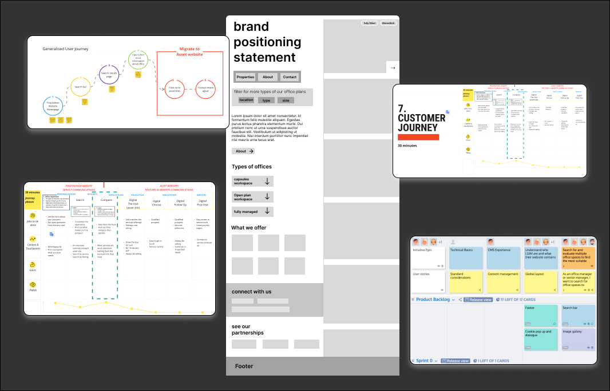
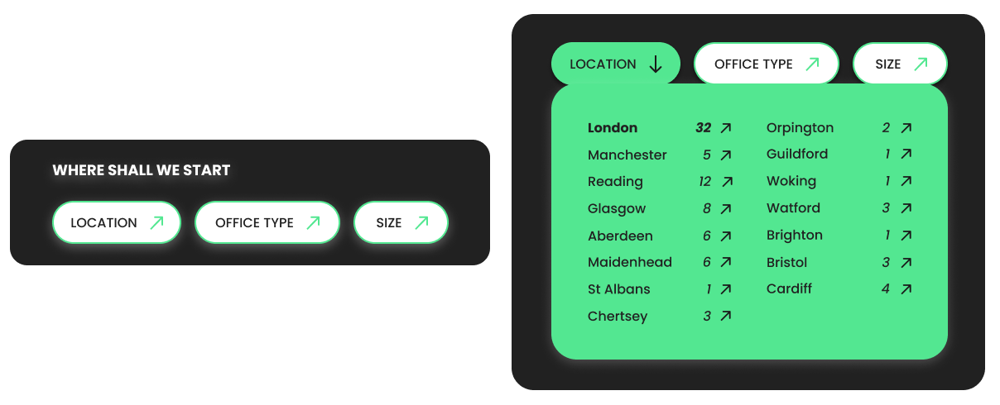

LEGAL & GENERAL WORKSPACES
With all the changes to how people work from the office since Covid, Legal & General needed a property asset website to promote and showcase the overall proposition while differentiating themselves from their competition
-
PROBLEM
Coming out of Covid the rental office market has tangibly changed. Occupiers now need spaces that offer more to their employees than working from home. They also need asset managers who understand this and can offer a service that is flexible to meet their needs.
-
THE BRIEF
To allow L&G real property assets to flourish, it needs a website presence that will be interlinked to L&G, but separate from the group L&G website to showcase all 20 unique office buildings. It also must feature all L&G-owned work buildings with their branding and [if available] microsites attached.
This workspace website needs to associate with the L&G brand, but have its modern twist to work with the goals of the property websites.
This website needs to clearly and concisely showcase the capabilities of the workspaces to attract partners and investors in the future while
also generating leads for the offices themselves. Essentially the purpose of the new proposition website is to provide a clear and effective shop
window for the L&G Office proposition to sell occupiers.
RESEARCH
-
Ran individual miro sessions with property managers
these Miro board sessions helped define 'the problem statement' and 'purpose' for the property managers to help define the needs the website can support with 15 property managers
-
Created a user experience survey for current occupies
Current occupies already in L&G workspaces answered questions on a survey that helped to define wants and needs from what guided current occupies to L&G office spaces.
-
Stakeholder interviews with estate agents
Ran interviews with estate agents who work with L&G to discuss the most common questions and concerns they receive when working with potential occupiers. Questions ranged from roles and responsibilities to functionality they would like to see to add value to the website.
-
Ran individual miro sessions with property managers
these Miro board sessions helped define 'the problem statement' and 'purpose' for the property managers to help define the needs the website can support with 15 property managers
-
Created a user experience survey for current occupies
Current occupies already in L&G workspaces answered questions on a survey that helped to define wants and needs from what guided current occupies to L&G office spaces.


Application of strategy & Design

Homepage filters
One of the first identified high severities pain points discovered through our miro session with property managers and in our current occupier's interviews was the users needed an easy way to search on most workspace properties websites to screen if L&G properties met their needs.
Property managers noted that they received a lot of inquiries that didn't fit the needs of an inquirer which lost them their lead to rent the space.
The homepage filters make sure that this flow would be quick and easy for a user to provide imidate feedback in each step of the user's searching process. In a sense they 'filter' what they want in a property before even having to leave the home page.
These filters are sticky and follow a user from the moment they land on the L&G workspace website all through the homepage so the user has the option to scroll down the homepage to learn more. Once the filter is clicked the pre-saved options are available and will take the user straight to the pre-filtered properties page for the user to continue their search.
Sidebar featured properties scroll
To continue to alleviate the pain point identified above a sidebar scroll featuring key properties was added to the homepage. The use case for the sidebar scroll is to allow users to see properties available on L&G without having to navigate to a formal property search page.
These feature properties state the location above the image, the name of the property and an eco icon to indicate that a property has a sustainable initiative available.
The properties sidebar scroll showcases multiple offerings that a property might have which was defined as an epic for being able to prioritise environmental sustainability and green initiatives when searching for an office space.

Micro-interactions
Simplicity wasn't the only challenge when creating a unique yet authentic requirement process page. Making the page feel approachable aligns with Nestlé's goal to attract the best talent for good.
The page had to convey authenticity using fun illustrations that celebrate the process and invite future applicants to track their journey using a scrollable line animation. The goal of the page was always to inform an applicant while making the job seeker comfortable with Nestlé's values and brand.
'tips' section to ensure this process feels reciprocal, presenting what Nestle expects and ensuring any applicant is the right fit.
UX writing
Real estate and Investment are two industries that are full of in-industry terminology. While speaking to stakeholders and property managers during our many sessions of interviews, I realised that the content provided needed UX writing to create an intuitive, engaging, and user-friendly experience while on the website.
Industry acronyms introduce additional cognitive load as users may need to pause and decipher unfamiliar terms, potentially disrupting their flow and hindering their user experience.
I needed phrases that avoided industry acronyms to facilitate easier internationalisation and localisation efforts, as it minimizes the need for extensive translation and adaptation of specialised terms.
By using clear and universally understandable language, L&G workspace can cater to diverse audiences more effectively.
Ongoing KPI's
Legal and general workspaces will have an ongoing managed service contact in which analytics will be monitored. In the meantime, property asset sites are currently being built to match the look and feel of the main property website to continue continuity under one L&G.
If you would like to see the full website in action take a look here.
*Pages of the website may look differently than outlines. Radley Yeldars team is constantly improving the LGIM properties website as of an ongoing contact with the L&G team. The designs above are from the beginning of the launch.
Any questions on further work performed for the Legal & General account feel free to get in touch.